Adaloで作成したものです。クラウドサービスを利用しているため、URLをクリックするだけで利用できます。
404 not foundになると思いますが、URLの頭の https://kklab.mobi/sakura/%E2%80%9D の部分を削除して、次のhttps始まりにしたら開けます。
PREVIEWの状態なので、正式なものではないです。
間違えてもすぐに削除できるので、ご自身のペットを登録してみてください。
想定しているユーザー数が少ないため、ログイン機能は甘く作ってあります。新規登録しないで、既存のIDでログインしてください。
たまに登録できないエラーが生じますが、恐らくPREVIEW版だからだと思われます。 できなければ諦めてください。
AppSheetで作成したため、利用者のスマートフォンにAppSheetの専用アプリをインストールしないと利用できません。
スライドのスクリーンショットをご覧ください。
 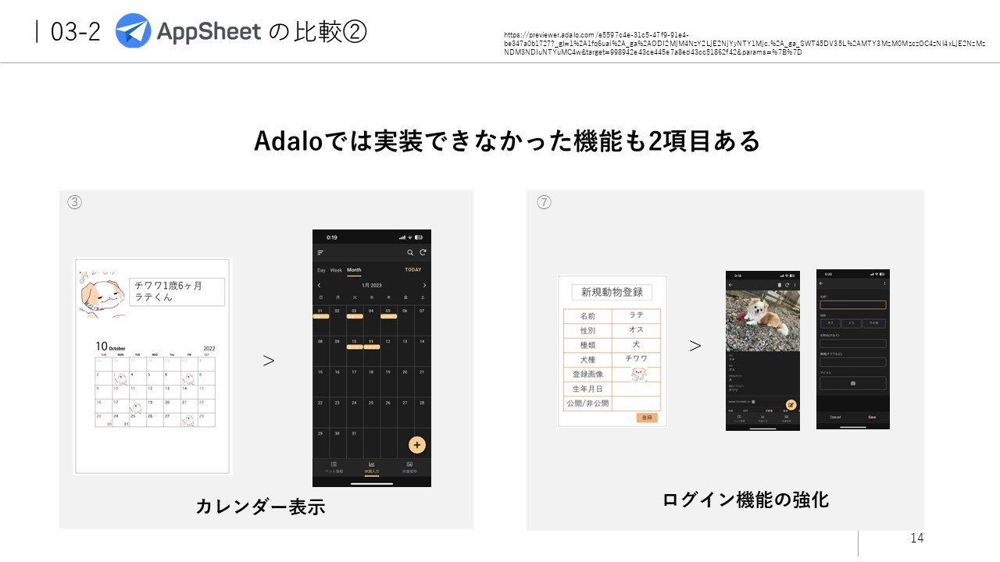
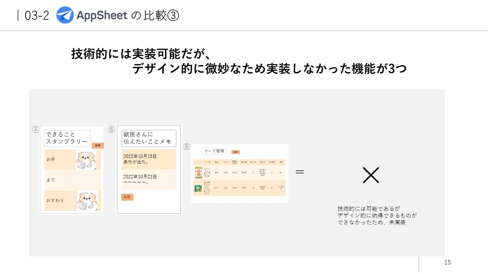
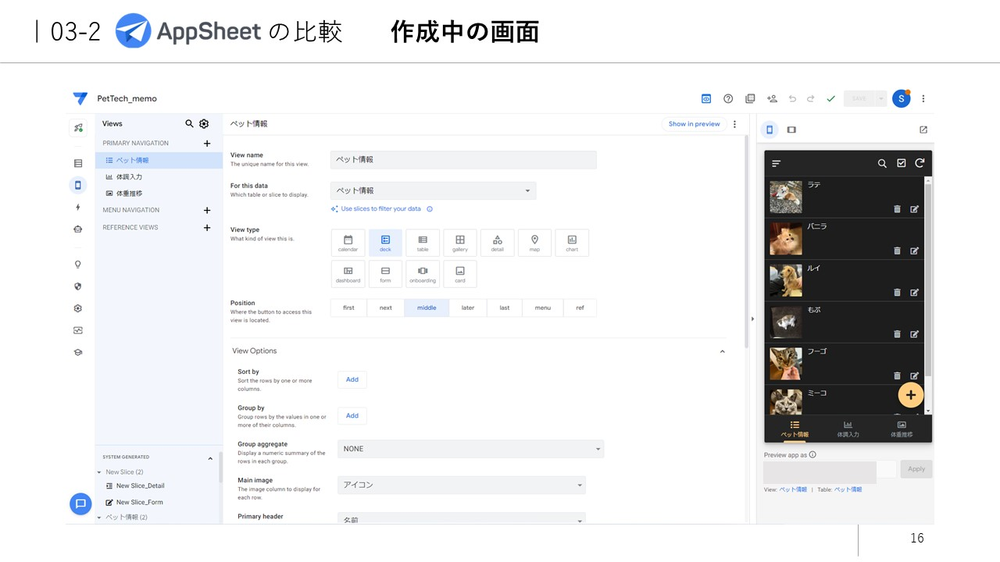
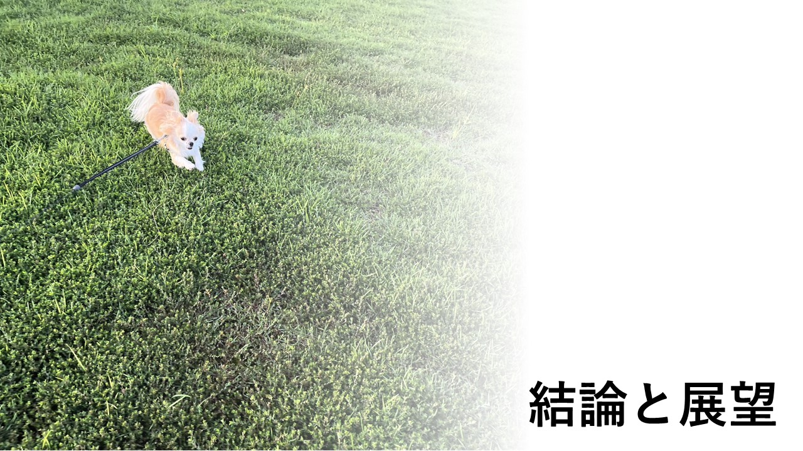
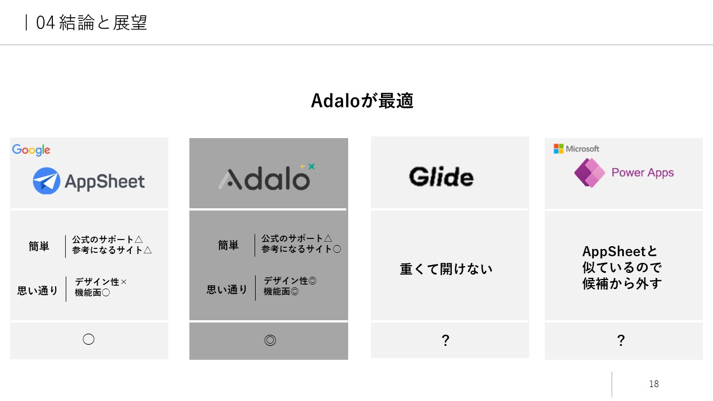
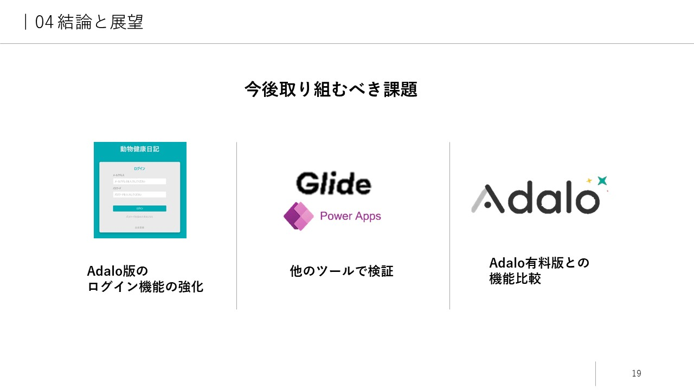
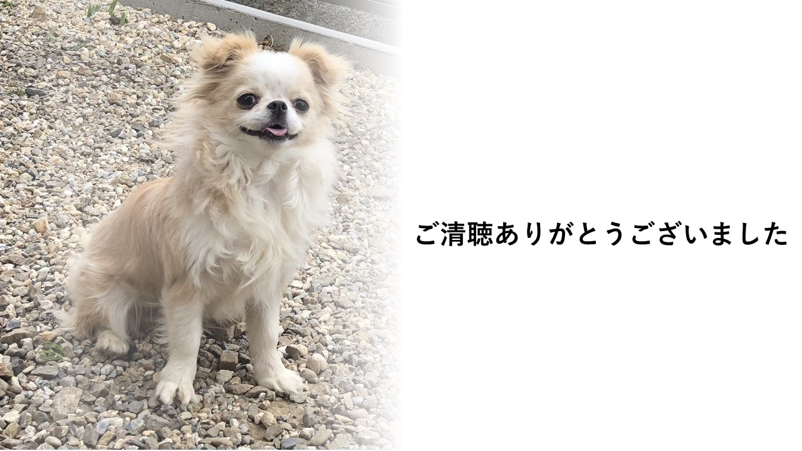
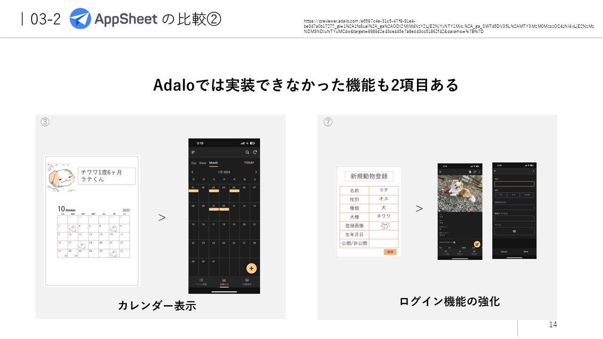
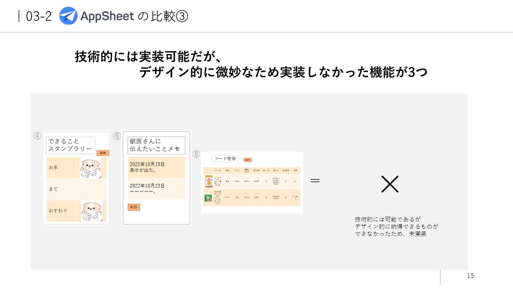
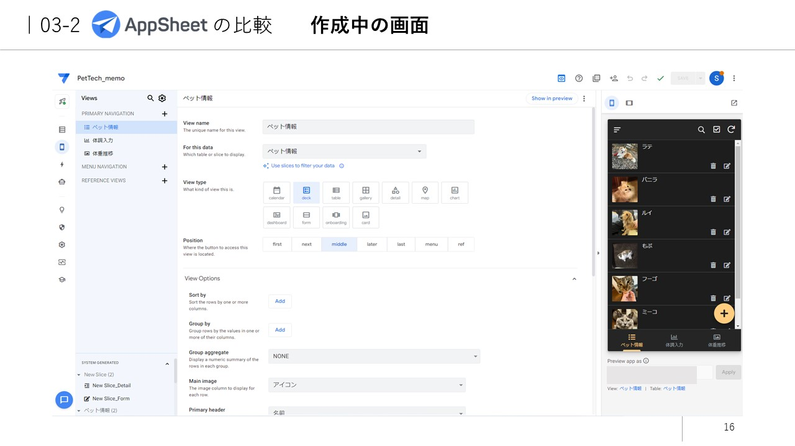
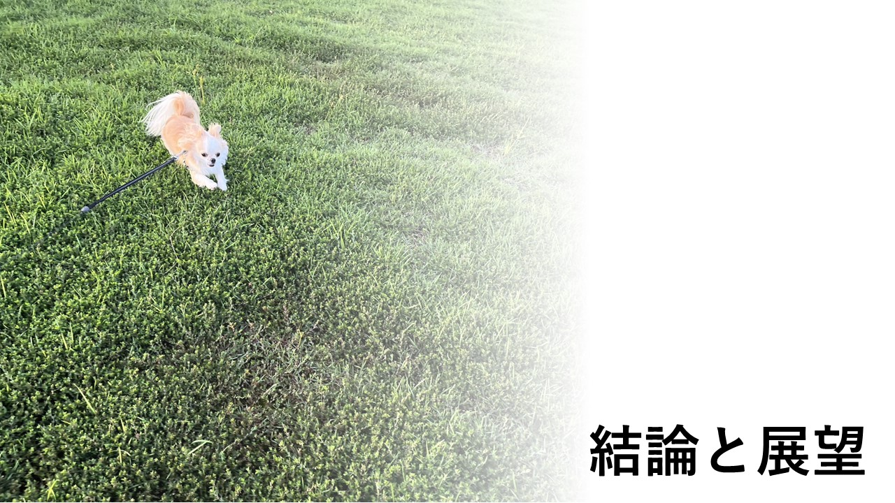
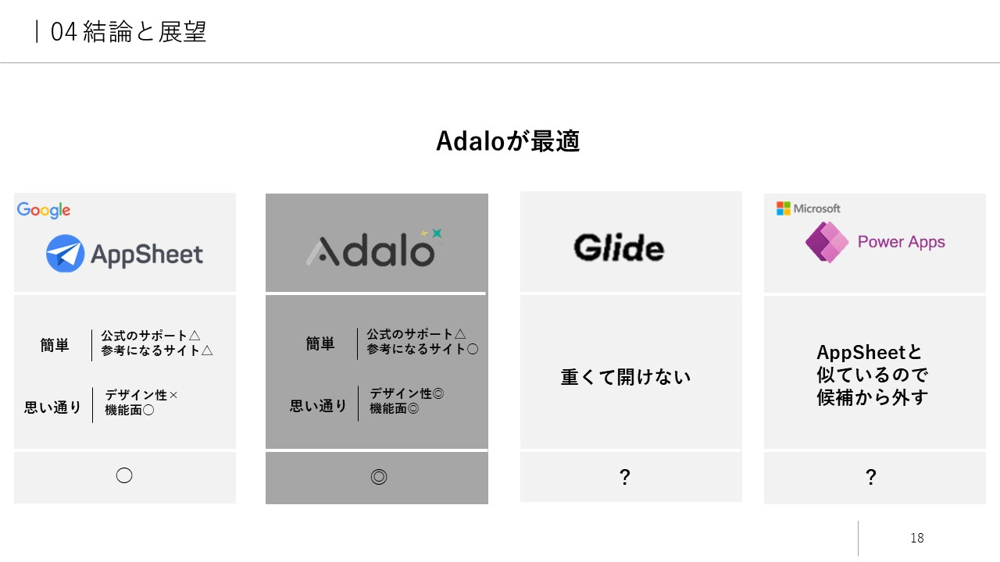
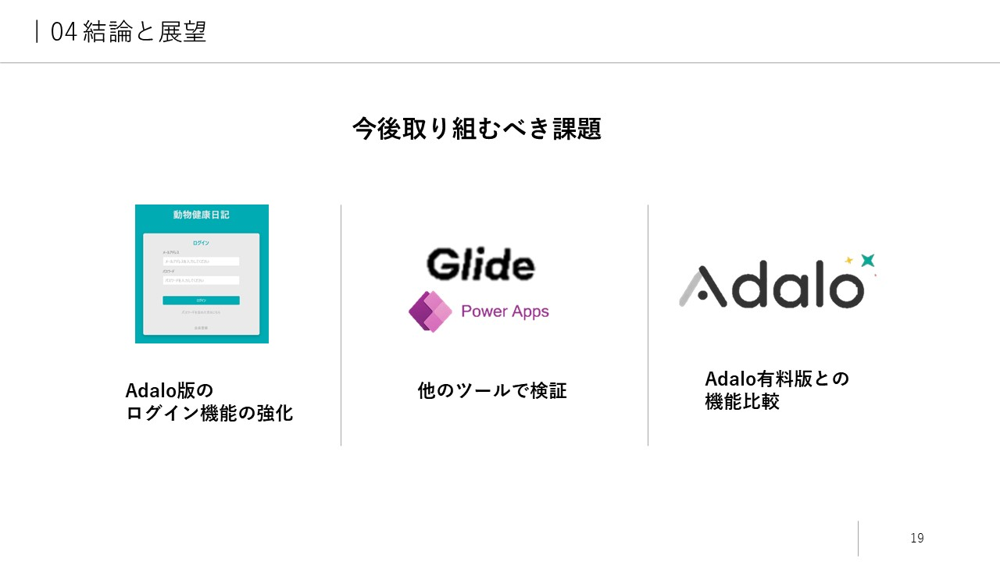
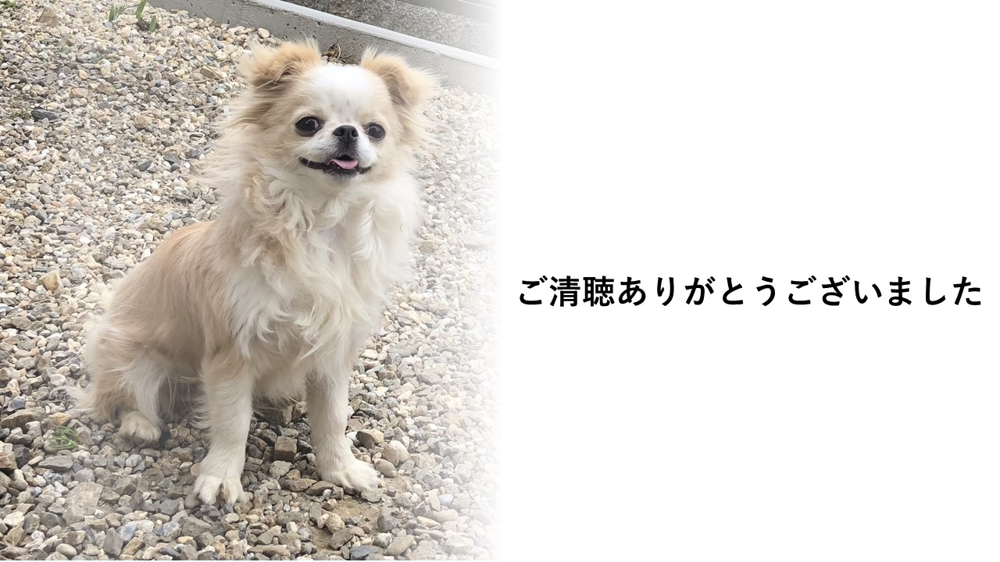